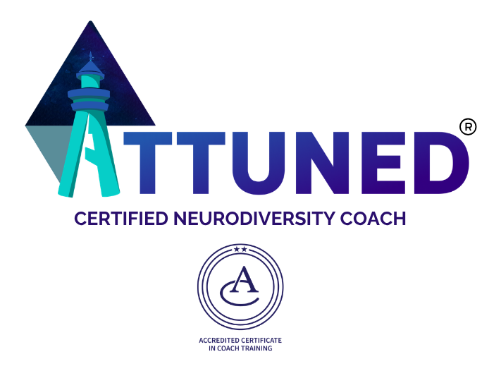

Working with Individuals
Coaching
One-to-one and group coaching for neurodivergent professionals and anyone navigating work, identity or change. I bring my lived experience as an autistic, ADHD, dyslexic and dyspraxic person with physical conditions. I'm trained as a Neurodiversity Coach under the ATTUNED approach, which is a neuro-affirming coaching approach centred on collaboration, respect, and the recognition of each individual's unique strengths and perspectives.
Free coaching community
Not sure if coaching is right for you? I run free weekly calls where you can meet me, hear how I work, and ask anything — before committing to anything.
Who this is for
Neurodivergent professionals
You're autistic, ADHD, dyslexic or otherwise neurodivergent and navigating a workplace that wasn't designed with you in mind. You want strategies that work with how your brain actually functions.
Leaders in transition
You're in a new role, facing a career change, or questioning where you're headed. You want structured support to think it through and create a clear, practical plan.
Anyone figuring out their next move
You don't need to wait til you're burnt out or hitting a crisis. Sometimes you just need dedicated space to think — with someone who understands, listens and asks the relevant questions.
How it works
Initial consultation — £35 / 30 minutes
A focused conversation to understand your current situation, what you're looking for support with, and whether coaching is the right fit. Afterwards, I'll come back to you with a recommendation — this might be suggested next steps, the type of coaching that would be most useful, or whether another kind of support would serve you better.
This isn't a sales call. You're paying for my time, attention, and professional judgement.
If you go on to book a first coaching session, the £35 is deducted from the cost of that session.
Scoping session
We agree on goals, format and frequency.
Most clients work
with in 30, 60 or 90-minute sessions.
I offer a sliding scale of prices based on your means, which keeps the service accessible to a range of people.
Regular sessions
Ongoing coaching built around what you need. Confidential, non-judgemental, and no expectation that you arrive with everything figured out.
Review
We check in on progress and adapt as your goals develop. Coaching can be short-term or open-ended — whatever serves you best.
What's included
- £35 initial consultation (30 minutes). The cost can be deducted from your first session, if you choose to start coaching
- Regular 1:1 sessions
- Group coaching programmes (available on request)
- Resources, worksheets and frameworks tailored to neurodivergent professionals
- A neurodiversity-informed, strengths-based approach throughout
Qualifications & approach

Qualified through Attuned Neurodiversity Coaching, accredited by the Association for Coaches.
The ATTUNED approach is a neuro-affirming coaching model grounded in the belief that neurodivergence is a natural and valuable aspect of human diversity — to be affirmed, not pathologised. It prioritises collaboration, respect and the client's own lived experience, with coach and client co-creating the work together.
Sessions focus on real-world experimentation and reflection, building genuine change through experience rather than theory. The relationship is built on mutual trust, empowering clients to take ownership of their journey.
Not ready to book?
I host free weekly community calls inside the Skool coaching community (opens in new tab). It's a good way to get a feel for my approach, ask questions, and see if this is the kind of support you're looking for — with no commitment.
Book an initial consultation.
Email me to arrange your 30-minute consultation.